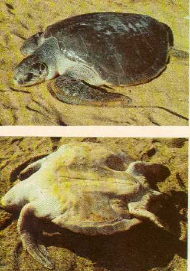

|
Digitized
Inventory of Animal Resources: Reptilia |
Chelonia mydas ( Linnaeus, 1758)
Taxonomic
Details
----- Scientific Name
----- Classification
----- Synonyms
----- Common Names
Other
Biological Details
----- Habit and
Habitat
----- Distribution
---------- Extend of
Occurrence
---------- Area of
occurrence
---------- Altitude
---------- Population
-----
Conservation Status
-----
Diagnostic
Features
-----
Breeding system
Miscellaneous
Information
Literature
Chelonia mydas ( Linnaeus, 1758)
Family :
Chelonidae Gray, 1825
Classification:
Order : Testudinidae
Suborder : Cryptodira
Family : Chelonidae
Synonyms:
Common Names: Green Sea Turtle
Adults are entirely herbivorous, feeding on algae, sea weeds, ( including Thalassia testudinum, Halodule spp., Syringodium spp., Cymodocea, Halophila, Posidonia, and Zostrea. Occasionally consume red, green and other algae. Young ones are carnivorous feed benthic invertebrates..
Nesting in sandy beaches, In Indian Ocean the nesting sites are Mozambique, Tongaland, Coast of South Africa, Madagaskar, Malaysia, Egypt, Thailand, Turkey, Cypruss, generally distributed in Indian and Indo-Chinese water. Known to nest in all most all parts of South , North America, Oman, Sri Lanka, Pakistan, Throughout Indian coast including Myanmar, In India, frequented in Puri coast, Andaman Islands, Rameswarm, Cape Comorin, Pamban etc.
Extend of Occurrence
Circum tropical species,
nesting in tropical
and subtropical oceans of the
world,
Area of occurrence: In India, frequented in Puri coast, Andaman Islands, Rameswarm, Cape Comorin, Pamban etc.
Altitude:
Population:
Conservation status: Size :
Largest sea turtle, reaches an average 100 – 155 cm ,
in length, largest recorded weighs
425 kg. ( Average weight 135 – 175 kg. IUCN
Red Data Book – 114 cm, weighing
91 – 152 kg. Body :
Head round, small, snout short, jaws not hooked, horny sheath in the
upper jaw is feeble, lower jaw with strong denticulations, Head covered with symmetrical shields, one pair of prefrontal
shields,
Limbs/Flippers :
Flippers long, Tail :
Tail short, Carapace :
Adult 155 cm. serrated posteriorly,
not ossified completely, feebly
unicarinate in young, costal scutes – 4 on each side, Neural or Central scutes
– 5, Marginal shields 25, Colour :
Extremely vulnerable due to hunting pressure in
their migrating route, hunted for eggs, cartilage, oil and meat.
Stuffed youngones are sold as Curios, Turtle soup is regarded as
delicacy. Pollutants especially oil
droplets attached to Sargassum kills
the young ones. Shrimp trawls are
the major threat to the turtles. Appendix – I
of CITES.
Breeding system:
Frequents inshore water of less than 25 m depth, Prefers remote islands for nesting, usually congregates during June - November, lays 350 – 600 eggs/year in 25 – 60 cm deep sand pits, average clutch size 110. Incubation – 40 – 91 days, Female lays 2 - 3 times in an year with an interval of 15 days, Maturity 15 – 20 years. Female turtles remigration at an interval of 2 - 4 years. Females reach the same beach where they hatched, to lay eggs. Adult mate every 2 – 3 years and breed in cycles of 1, 3 or 4 years. Incubation is related to temperature and humidity. Hatching usually during night.
Miscellaneous
Information 
Economic Importance : Most valuable marine resource of the world. Flesh/meat of the turtle is the delicacy in certain parts of the world as “turtle soup” (Soppenchild Krote in German for Turtle soup ). Eggs are edible. Blood of the turtle is believed to be the elixer for certain locals in Tamil Nadu. Turtle oil is used in the manufacture of Cosmetics. Baby turtles are collected, curetted and sold as curios.